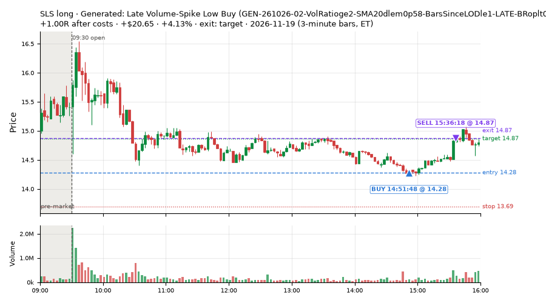
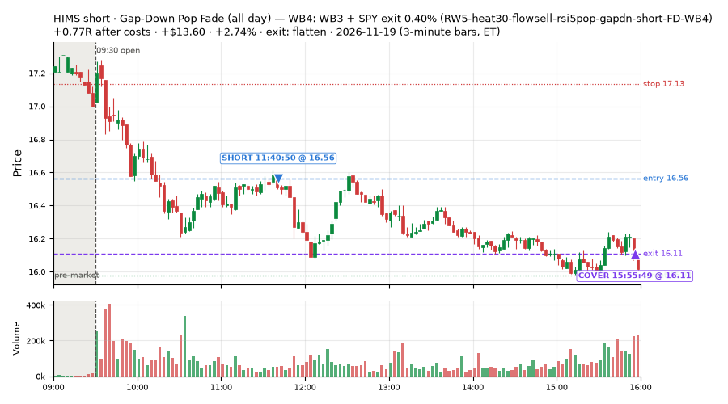
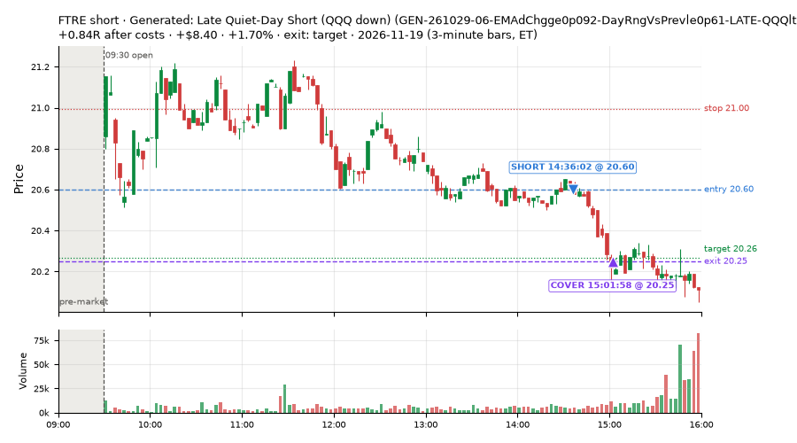
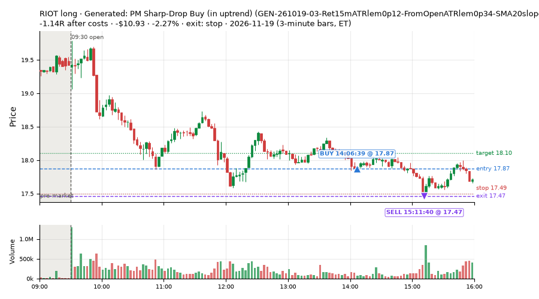
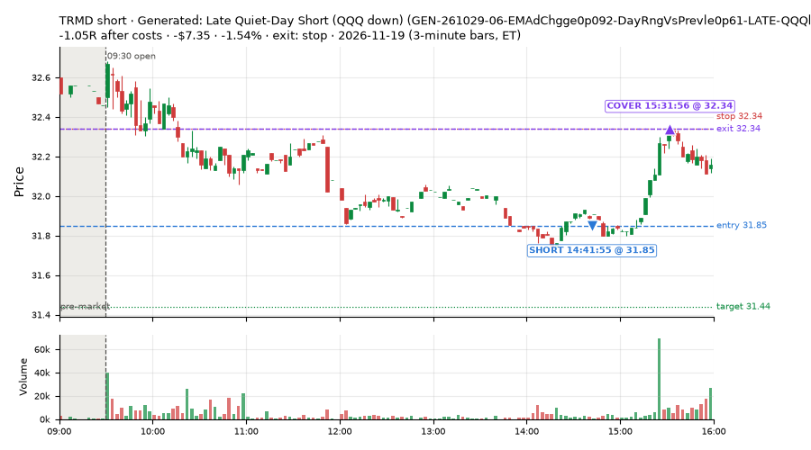
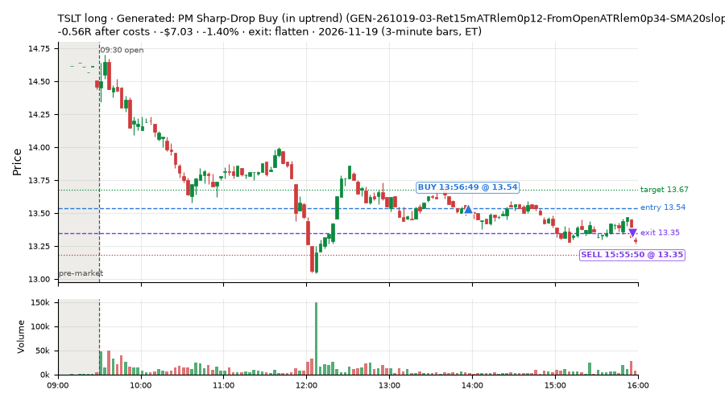
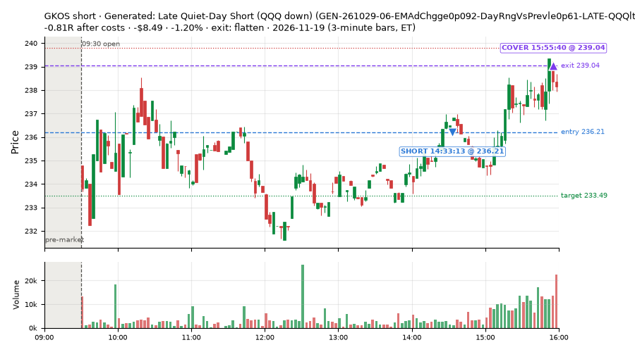
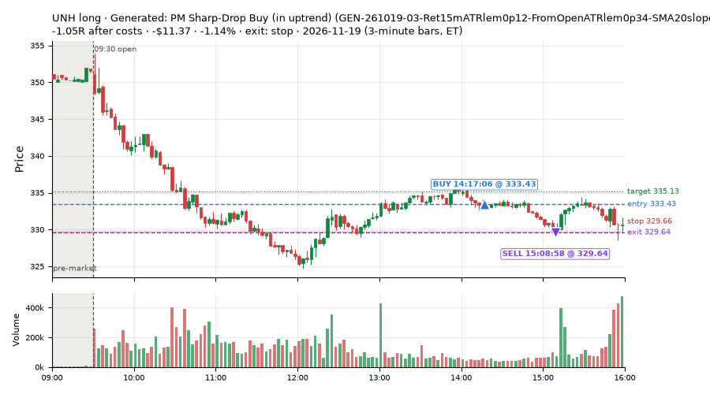

49 trades · win rate 63% · P/L $41.31
PROBATION: no live setup has passed both locked test periods. 10 owner-directed setups added 2026-10-08 (MarcoFlow top 5 + 5 new), untested live. RW6G1 (RW6 + VWAP band guard) added 2026-10-09, probation.

| Symbol | Setup | Side | In | Out | Entry | Exit | Exit reason | % gained | P/L |
|---|---|---|---|---|---|---|---|---|---|
| SLS | Generated: Late Volume-Spike Low Buy (GEN-261026-02-VolRatioge2-SMA20dlem0p58-BarsSinceLODle1-LATE-BRoplt0p35-t1s1-long) | long | 14:51 | 15:36 | 14.28 | 14.87 | target | +4.13% | $20.65 |
| HIMS | Gap-Down Pop Fade (all day) — WB4: WB3 + SPY exit 0.40% (RW5-heat30-flowsell-rsi5pop-gapdn-short-FD-WB4) | short | 11:40 | 15:55 | 16.56 | 16.11 | flatten | +2.74% | $13.60 |
| FTRE | Generated: Late Quiet-Day Short (QQQ down) (GEN-261029-06-EMAdChgge0p092-DayRngVsPrevle0p61-LATE-QQQltm0p3-t1s1-short) | short | 14:36 | 15:01 | 20.60 | 20.25 | target | +1.70% | $8.40 |
| Symbol | Setup | Side | In | Out | Entry | Exit | Exit reason | % lost | P/L |
|---|---|---|---|---|---|---|---|---|---|
| RIOT | GEN-261019-03-Ret15mATRlem0p12-FromOpenATRlem0p34-SMA20slopege0p29-PM-BRoplt0p5-t05s1-long | long | 14:06 | 15:11 | 17.87 | 17.47 | stop | -2.27% | $-10.93 |
| TRMD | GEN-261029-06-EMAdChgge0p092-DayRngVsPrevle0p61-LATE-QQQltm0p3-t1s1-short | short | 14:41 | 15:31 | 31.85 | 32.34 | stop | -1.54% | $-7.35 |
| TSLT | GEN-261019-03-Ret15mATRlem0p12-FromOpenATRlem0p34-SMA20slopege0p29-PM-BRoplt0p5-t05s1-long | long | 13:56 | 15:55 | 13.54 | 13.35 | flatten | -1.40% | $-7.03 |
| GKOS | GEN-261029-06-EMAdChgge0p092-DayRngVsPrevle0p61-LATE-QQQltm0p3-t1s1-short | short | 14:33 | 15:55 | 236.21 | 239.04 | flatten | -1.20% | $-8.49 |
| UNH | GEN-261019-03-Ret15mATRlem0p12-FromOpenATRlem0p34-SMA20slopege0p29-PM-BRoplt0p5-t05s1-long | long | 14:17 | 15:08 | 333.43 | 329.64 | stop | -1.14% | $-11.37 |








Signal to fill: median 2s, 90th percentile 3s (49 trades). Bars close each minute; the order follows the bar close.
Best excursion (MFE): median 0.52R; worst (MAE) median 0.38R. 24% of trades never got +0.25R in our favour; 0 reached +1R and still closed at or below 0.
| Symbol | Setup | Best R | Worst R | Closed R |
|---|---|---|---|---|
| RIOT | GEN-261019-03-Ret15mATRlem0p12-FromOpenATRlem0p34-SMA20slopege0p29-PM-BRoplt0p5-t05s1-long | +0.60 | -1.09 | -1.14 |
| INSM | GEN-261019-09-EMAdChgge0p15-Since950ATRge0p6-PM-SPYltm0p5-t05s1-short | +0.26 | -1.11 | -1.09 |
| GKOS | GEN-261029-06-EMAdChgge0p092-DayRngVsPrevle0p61-LATE-QQQltm0p3-t1s1-short | +0.51 | -0.88 | -0.81 |
| TEVA | GEN-261026-02-VolRatioge2-SMA20dlem0p58-BarsSinceLODle1-LATE-BRoplt0p35-t1s1-long | +0.92 | -0.41 | -0.35 |
| LNC | GEN-261019-03-Ret15mATRlem0p12-FromOpenATRlem0p34-SMA20slopege0p29-PM-BRoplt0p5-t05s1-long | +0.08 | -1.12 | -1.16 |
| Entry time | Trades | Win | Avg R | P/L |
|---|---|---|---|---|
| 10:30-11:30 | 1 | 100% | +0.90 | $4.90 |
| 11:30-13:00 | 4 | 75% | +0.13 | $12.96 |
| 13:00-14:00 | 13 | 62% | -0.12 | $-3.43 |
| 14:00-16:00 | 31 | 61% | +0.06 | $26.88 |
| Setup | Trades | Win | Avg R after costs | Adj R (net of SPY) | Avg R ex-market (all sessions) | P/L |
|---|---|---|---|---|---|---|
| Generated: PM Sharp-Drop Buy (in uptrend) (GEN-261019-03-Ret15mATRlem0p12-FromOpenATRlem0p34-SMA20slopege0p29-PM-BRoplt0p5-t05s1-long) | 12.0 | 50% | -0.35 | -0.09 | -0.14 (beta +1.17, n 26) | $-34.87 |
| Generated: PM Runner Fade (SPY down) (GEN-261019-09-EMAdChgge0p15-Since950ATRge0p6-PM-SPYltm0p5-t05s1-short) | 3.0 | 67% | -0.20 | -0.17 | -0.04 (beta +1.23, n 6) | $0.14 |
| Generated: Late Volume-Spike Low Buy (GEN-261026-02-VolRatioge2-SMA20dlem0p58-BarsSinceLODle1-LATE-BRoplt0p35-t1s1-long) | 4.0 | 75% | +0.27 | +0.40 | -0.36 (beta +0.22, n 19) | $22.57 |
| Generated: Late Quiet-Day Short (QQQ down) (GEN-261029-06-EMAdChgge0p092-DayRngVsPrevle0p61-LATE-QQQltm0p3-t1s1-short) | 23.0 | 65% | +0.16 | -0.13 | +0.20 (beta +0.08, n 97) | $30.24 |
| Gap-Down Bounce Short, Heavy Selling — WB3: RSI 55-60 + 1R >= 0.40% + to 13:00 + SPY-since-09:50 gate (RW1-gapdn-bounce-flowsell-short-FD-WB3) | 2.0 | 50% | +0.29 | -1.47 | -0.32 (beta -0.98, n 35) | $3.92 |
| Gap-Down Pop Fade (all day) — WB4: WB3 + SPY exit 0.40% (RW5-heat30-flowsell-rsi5pop-gapdn-short-FD-WB4) | 5.0 | 80% | +0.20 | -0.89 | +0.07 (beta -0.32, n 13) | $19.31 |
Market direction (SPY, beta 1) accounted for $63.02 of today's $41.31; the rest ($-21.71) came from the setups themselves. Avg R net of SPY: -0.21 (incl. a hedge leg's cost; report only).
17 setups live today. Today: 101 signals, 49 taken, 1 lost because another setup held the symbol (1%). Since 2026-11-12 (6 sessions): 1057 signals, 500 taken, 3 lost to other setups (0%). Peak open positions today 42 of 400 slots. Earnings blackout removed 209 symbols before scanning.
Simulated playing time (not live): 556 what-if trades of signals not taken, avg +0.00R, 63% winners; of them 3 lost to another setup (avg +0.23R).
Silent: GEN-261027-01-MACDhge0p12-Ret15mATRlem0p069-LATE-BRvwgt0p5-t05s1-long-WB5, IDX2-spy075-0945-3x-trail, LD4-st4-breadthup-t1s05-long, GEN-261027-02-NewLOD-RSI14le35-Gapge2-PM-SPYup-holdtr-long, GEN-261027-03-NewLOD-DayPosle0p19-SMA20dlem0p59-LAM-SPYgt0p5-hold-long, GEN-261022-07-Z12lem1p9-FlowShiftlem0p96-ATRdge3p6-AM-BRopgt0p5-t1s1-short, CWT04-backside-vwaptest-a25-short
| Prio | Setup | Today sig / taken | Sessions | Signals / taken / trades | Taken/day | Expected/day | Lost to other setups | Lost to (setup n) | Top skip reasons | SIMULATED: not-taken n / avg R / win | Verdict |
|---|---|---|---|---|---|---|---|---|---|---|---|
| 1 | Gap-Down Pop Fade (all day) — WB4: WB3 + SPY exit 0.40% RW5-heat30-flowsell-rsi5pop-gapdn-short-FD-WB4 | 7 / 5 | 3 | 20 / 13 / 13 | 4.33 | – | 0 | – | spread / quote / size 7 | 7 / -0.08R / 57% | ok 21.7 entries/week |
| 2 | Gap-Down Bounce Short, Heavy Selling — WB3: RSI 55-60 + 1R >= 0.40% + to 13:00 + SPY-since-09:50 gate RW1-gapdn-bounce-flowsell-short-FD-WB3 | 7 / 2 | 3 | 56 / 35 / 35 | 11.67 | – | 0 | – | spread / quote / size 12, other 8, not shortable / shorts off 1 | 21 / -0.11R / 48% | ok 58.3 entries/week |
| 3 | Generated: Late Pullback Buy (MACD rising) — WB5: 14:00-14:30, $100M ADV, breadth gate GEN-261027-01-MACDhge0p12-Ret15mATRlem0p069-LATE-BRvwgt0p5-t05s1-long-WB5 | 0 / 0 | 3 | 0 / 0 / 0 | 0.00 | – | 0 | – | – | 0 / – | silent no signals in 3 session(s); no expected rate on file |
| 4 | Generated: PM Runner Fade (SPY down) GEN-261019-09-EMAdChgge0p15-Since950ATRge0p6-PM-SPYltm0p5-t05s1-short | 14 / 3 | 4 | 32 / 6 / 6 | 1.50 | – | 0 | – | not shortable / shorts off 22, other 3, spread / quote / size 1 | 26 / +0.26R / 81% | slow 7.5 entries/week; ~8 weeks to 60 trades |
| 5 | Generated: Late Volume-Spike Low Buy GEN-261026-02-VolRatioge2-SMA20dlem0p58-BarsSinceLODle1-LATE-BRoplt0p35-t1s1-long | 11 / 4 | 4 | 32 / 19 / 19 | 4.75 | – | 1 | GEN-261029-06-EMAdChgge0p092-DayRngVsPrevle0p61-LATE-QQQltm0p3-t1s1-short 1 | other 6, spread / quote / size 5, symbol held by another setup 1 | 13 / -0.31R / 31% | ok 23.8 entries/week |
| 6 | Index Dip Bounce 2 3x S&P IDX2-spy075-0945-3x-trail | 0 / 0 | 6 | 0 / 0 / 0 | 0.00 | – | 0 | – | – | 0 / – | silent no signals in 6 session(s); no expected rate on file |
| 7 | * Oversold EMA Cross-Down with Breadth Turning Up (near-miss) LD4-st4-breadthup-t1s05-long | 0 / 0 | 6 | 0 / 0 / 0 | 0.00 | – | 0 | – | – | 0 / – | silent no signals in 6 session(s); no expected rate on file |
| 8 | Monday Weak-RS NS3 Short (near-miss) NM-RWN5-ns3-mon-weakrs-short | 0 / 0 | 6 | 1 / 1 / 1 | 0.17 | – | 0 | – | – | 0 / – | slow 0.8 entries/week; ~72 weeks to 60 trades |
| 9 | Panic Flush Reversal (deep, 5x volume) CWT05-flush-m075-v5-long | 0 / 0 | 6 | 3 / 2 / 2 | 0.33 | – | 0 | – | broker rejected 1 | 1 / +0.59R / 100% | slow 1.7 entries/week; ~36 weeks to 60 trades |
| 10 | Generated: PM Gap-Up New-Low Buy (SPY up) GEN-261027-02-NewLOD-RSI14le35-Gapge2-PM-SPYup-holdtr-long | 0 / 0 | 4 | 0 / 0 / 0 | 0.00 | – | 0 | – | – | 0 / – | silent no signals in 4 session(s); no expected rate on file |
| 11 | Generated: Lunch New-Low Short (selling) GEN-261026-03-NewLOD-Flow3lem0p37-FromOpenATRlem0p78-LUNCH-BRopgt0p5-holdtr-short | 0 / 0 | 6 | 4 / 4 / 4 | 0.67 | – | 0 | – | – | 0 / – | slow 3.3 entries/week; ~18 weeks to 60 trades |
| 12 | Generated: Late-AM New-Low Buy (SPY up) GEN-261027-03-NewLOD-DayPosle0p19-SMA20dlem0p59-LAM-SPYgt0p5-hold-long | 0 / 0 | 4 | 0 / 0 / 0 | 0.00 | – | 0 | – | – | 0 / – | silent no signals in 4 session(s); no expected rate on file |
| 13 | Generated: Late Quiet-Day Short (QQQ down) GEN-261029-06-EMAdChgge0p092-DayRngVsPrevle0p61-LATE-QQQltm0p3-t1s1-short | 43 / 23 | 4 | 305 / 97 / 97 | 24.25 | – | 1 | CWT14-failbrk-pdl-p10-lowvol-long 1 | per-setup cap 100, not shortable / shorts off 47, spread / quote / size 35 | 208 / +0.14R / 66% | ok 121.2 entries/week |
| 14 | Generated: PM Sharp-Drop Buy (in uptrend) GEN-261019-03-Ret15mATRlem0p12-FromOpenATRlem0p34-SMA20slopege0p29-PM-BRoplt0p5-t05s1-long | 19 / 12 | 6 | 45 / 26 / 26 | 4.33 | – | 1 | RW1-gapdn-bounce-flowsell-short-FD-WB3 1 | spread / quote / size 14, other 4, symbol held by another setup 1 | 19 / +0.11R / 68% | ok 21.7 entries/week |
| 15 | Generated: Morning Breakdown Short (volatile) GEN-261022-07-Z12lem1p9-FlowShiftlem0p96-ATRdge3p6-AM-BRopgt0p5-t1s1-short | 0 / 0 | 4 | 0 / 0 / 0 | 0.00 | – | 0 | – | – | 0 / – | silent no signals in 4 session(s); no expected rate on file |
| 16 | Afternoon VWAP Reclaim Fade NS4-pm-vwap-reclaim-oversold-short | 0 / 0 | 6 | 36 / 13 / 13 | 2.17 | 3.05 | 0 | – | spread / quote / size 10, other 10, not shortable / shorts off 3 | 23 / +0.01R / 56% | slow 10.8 entries/week; ~6 weeks to 60 trades |
| 17 | Failed Opening-Range-Low Break Long — WB5: cost filter, SPY gate, wider stop CWT14-failbrk-orl-p10-long-WB5 | 0 / 0 | 3 | 101 / 75 / 75 | 25.00 | – | 0 | – | spread / quote / size 25, broker rejected 1 | 26 / +0.08R / 77% | ok 125.0 entries/week |
Every trade is attached as a CSV you can open and edit in Excel or Google Sheets. Live page: https://misiti15.github.io/MCF/live/